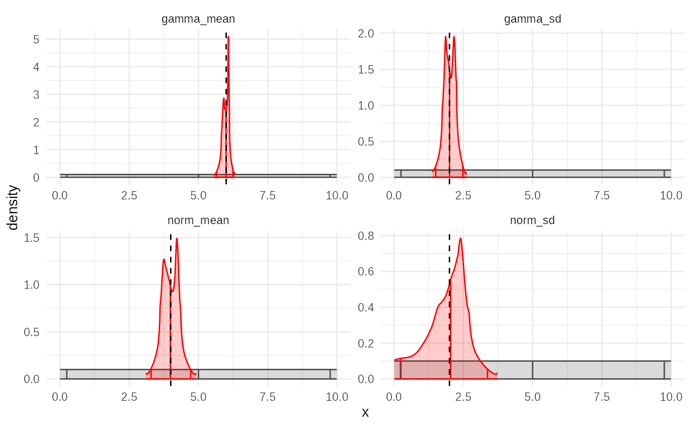
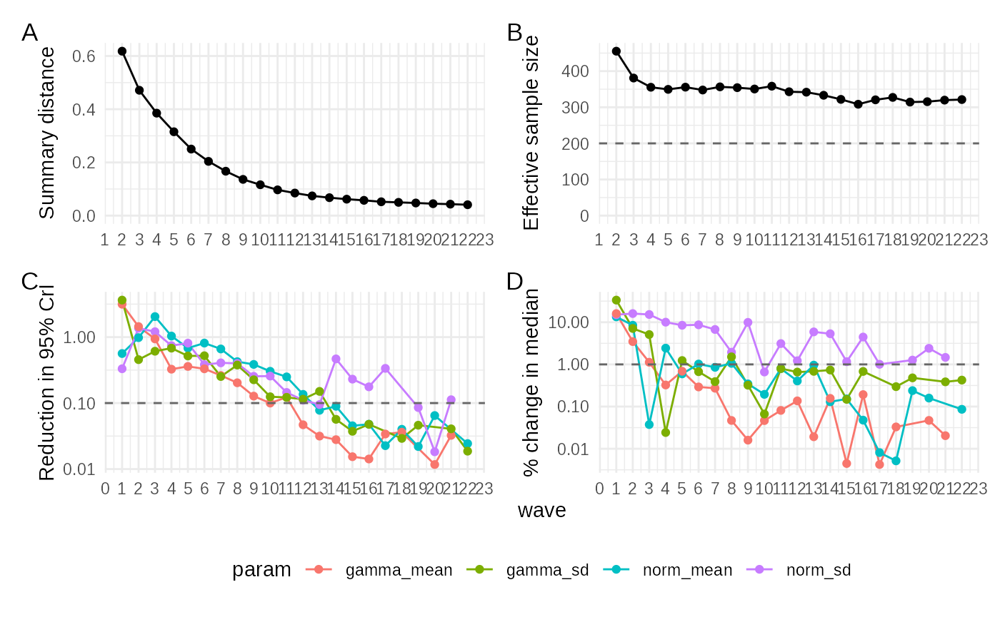
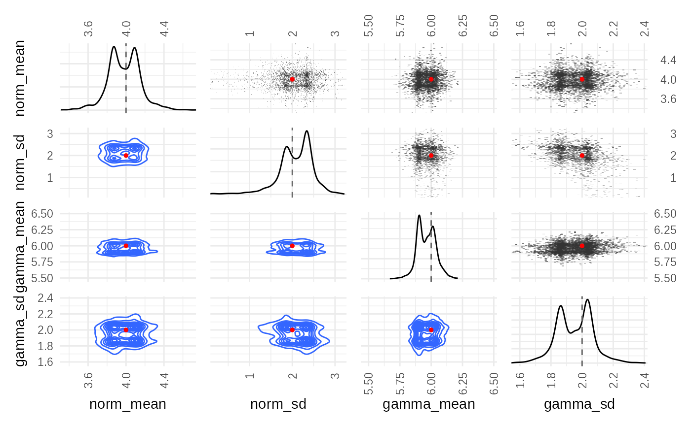

Introduction
This vignette demonstrates the Approximate Bayesian
Computation Adaptive algorithm using tidyabc. Like
ABC-SMC, ABC-Adaptive is an iterative method that refines the parameter
estimates across multiple waves. However, it differs fundamentally in
how it generates proposals for the next wave.
Instead of using a fixed perturbation kernel around previous particles (as in SMC), ABC-Adaptive fits empirical proposal distributions to the weighted posterior sample from the previous wave. New particles for the next wave are then sampled directly from these fitted distributions. This approach aims to better capture the shape of the current posterior approximation and can sometimes lead to faster convergence or more efficient exploration, particularly when the posterior shape deviates significantly from a normal distribution.
This example uses the same model, priors, and observed data as defined in the “Getting started” and “ABC Sequential Monte-Carlo” vignettes.
Step 1: Define the Model, Data, and Priors (Recap)
We reuse the simulation function (test_simulation_fn),
scoring function (test_scorer_fn), priors
(test_priors), and observed data
(test_obsdata) from the previous vignettes. We also run a
small trial fit to calculate the scoreweights as
recommended for SMC.
# example simulation
# Well be trying to recover norm and gamma parameters
# We'll use this function for both example generation and fitting
test_simulation_fn = function(norm_mean, norm_sd, gamma_mean, gamma_sd) {
A = rnorm(1000, norm_mean, norm_sd)
B = rgamma2(1000, gamma_mean, gamma_sd)
C = rgamma2(1000, gamma_mean, gamma_sd)
return(
list(
data1 = A + B - C,
data2 = B * C
)
)
}
test_scorer_fn = function(simdata, obsdata) {
return(list(
data1 = calculate_wasserstein(simdata$data1, obsdata$data1),
data2 = calculate_wasserstein(simdata$data2, obsdata$data2)
))
}
tmp = test_simulation(
test_simulation_fn,
test_scorer_fn,
norm_mean = 4, norm_sd=2, gamma_mean=6, gamma_sd=2,
seed = 123
)
truth = tmp$truth
test_obsdata = tmp$obsdata
test_priors = priors(
norm_mean ~ unif(0, 10),
norm_sd ~ unif(0, 10),
gamma_mean ~ unif(0, 10),
gamma_sd ~ unif(0, 10),
# enforces convex gamma:
~ gamma_mean > gamma_sd
)
test_priors
#> Parameters:
#> * norm_mean: unif(min = 0, max = 10)
#> * norm_sd: unif(min = 0, max = 10)
#> * gamma_mean: unif(min = 0, max = 10)
#> * gamma_sd: unif(min = 0, max = 10)
#> Constraints:
#> * gamma_mean > gamma_sd
ggplot(
tibble(data1 = test_obsdata$data1), aes(x=data1))+
geom_histogram(bins=50, fill="steelblue", color="white")+
xlab("A + B - C")
ggplot(tibble(data2 = test_obsdata$data2), aes(x=data2))+
geom_histogram(bins=50, fill="coral", color="white")+
xlab("B × C")
trial_fit = abc_rejection(
obsdata = test_obsdata,
priors_list = test_priors,
sim_fn = test_simulation_fn,
scorer_fn = test_scorer_fn,
n_sims = 1000, # A smaller number for the trial run
acceptance_rate = 0.5 # A high acceptance rate for the trial to get diverse samples
)
#> ABC rejection, 1 wave.
# Calculate metrics, including recommended score weights
metrics = posterior_distance_metrics(trial_fit)
test_scorewt = metrics$scoreweights # Extract the recommended weightsStep 2: Run ABC-Adaptive
Now we execute the ABC-Adaptive algorithm. The key difference lies in how new proposals are generated between waves.
adaptive_fit = abc_adaptive(
obsdata = test_obsdata,
priors_list = test_priors,
sim_fn = test_simulation_fn,
scorer_fn = test_scorer_fn,
n_sims = 1000,
# Number of simulations per wave
acceptance_rate = 0.5,
# Proportion of particles accepted each wave
scoreweights = test_scorewt,
# Use the weights calculated from the trial fit
parallel = FALSE,
# Disable parallel processing for vignette
knots = 7,
# Number of knots for fitting the empirical CDF (controls smoothness/complexity)
bw = 0.1,
# Bandwidth for the kernel used in empirical fitting (controls smoothness)
widen_by = 1,
# Factor to widen the proposal distribution if ESS is too low (default is 1, no widening)
distfit = "analytical"
)
#> ABC-Adaptive
#> Adaptive waves: ■ 0% | wave 1 ETA: 5m
#> Adaptive waves: ■ 1% | wave 4 ETA: 5m
#> Adaptive waves: ■■ 2% | wave 7 ETA: 5m
#> Adaptive waves: ■■ 3% | wave 11 ETA: 5m
#> Adaptive waves: ■■ 4% | wave 15 ETA: 5m
#> Adaptive waves: ■■■ 5% | wave 18 ETA: 5m
#> Converged on wave: 22
#> Adaptive waves: ■■■ 6% | wave 21 ETA: 5m
summary(adaptive_fit)
#> ABC adaptive fit: 22 waves - (converged)
#> Parameter estimates:
#> # A tibble: 4 × 4
#> # Groups: param [4]
#> param mean_sd median_95_CrI ESS
#> <chr> <chr> <chr> <dbl>
#> 1 gamma_mean 5.970 ± 0.068 5.969 [5.805 — 6.175] 321.
#> 2 gamma_sd 1.954 ± 0.113 1.955 [1.678 — 2.219] 321.
#> 3 norm_mean 3.992 ± 0.170 3.991 [3.533 — 4.428] 321.
#> 4 norm_sd 2.059 ± 0.377 2.091 [0.906 — 2.786] 321.n_sims,acceptance_rate,scoreweights: These function similarly to SMC.knots: This parameter controls the complexity of the empirical distribution fitted to each parameter’s posterior sample in each wave. A higher number of knots allows the fitted distribution to capture more detail and potentially sharper features, but requires more data (simulations) to estimate reliably and is computationally more expensive. A lower number provides a smoother, more regularized fit. The default (often around 20-30) is often a good starting point, but 7 is used here for illustration.bw(bandwidth): This parameter affects the smoothing kernel used during the empirical CDF fitting (within theempirical_dataorempirical_cdffunctions). A smallerbwleads to a less smooth, potentially more detailed fit (closer to the sample histogram), while a largerbwproduces a smoother, more regularized fit. It influences the trade-off between fitting the sample closely and avoiding overfitting.widen_by: ABC-Adaptive includes a mechanism to prevent particle degeneracy (where the Effective Sample Size, ESS, drops too low). If the ESS falls below a threshold (e.g., 200), the algorithm increases the acceptance rate (loosens the toleranceepsilon) and applies thewiden()function to the empirical proposal distribution fitted from the previous wave’s particles. Thewiden_byparameter controls thescalefactor passed to thewiden()function, determining how much the dispersion of the proposal distribution is increased. A value of 1 (the default) means no widening is applied via thewiden()function; the adjustment happens only through the acceptance rate. Values greater than 1 will actively increase the spread of the proposal distribution based on the logit-space scaling transformation described previously (specifically,expit((logit(qx) - logit(qmedian)) * scale + logit(qmedian))wherescale = widen_by).The
summaryoutput shows the final posterior statistics aggregated across all waves.
Step 3: Visualize the Results
The standard posterior plot shows the marginal distributions for each parameter.
plot(adaptive_fit, truth = truth)
Compared to the SMC fit (using the same model and data), you might
observe differences in the shape of the posterior densities. Because the
empirical fitting process often respects the bounds of the prior
(especially when the prior is used as a link function, as mentioned in
the posterior_fit_empirical documentation), the resulting
posteriors can appear “sharper” or more constrained near the prior
boundaries, especially if the true posterior is close to these limits.
This is in contrast to SMC, where the Gaussian perturbation kernel can
sometimes produce smoother, more Gaussian-like tails.
Step 4: Diagnose Convergence
The plot_convergence() function is equally important for
the Adaptive algorithm.
plot_convergence(adaptive_fit)
This plot displays the same metrics as for SMC across waves: 1.
abs_distance: The tolerance
epsilon should decrease over waves, ideally converging
towards a stable value. 2. ESS (Effective Sample
Size): Unlike SMC, the ESS in Adaptive might show a different
pattern. It often rises as the proposal distribution adapts to the
posterior, but it might not plateau as distinctly. The lack of a clear
plateau doesn’t necessarily indicate non-convergence; it might
suggest that the algorithm could continue to converge faster if
run for more waves, as the proposals become increasingly efficient. The
absence of a plateau can be due to the direct adaptation of the proposal
distribution shape. 3. IQR_95_redn (95% CI
Reduction): This should generally decline, indicating shrinking
uncertainty in parameter estimates. 4.
rel_mean_change (Relative Mean Change):
This should also decline, indicating stabilizing central estimates.
The Adaptive method often converges in fewer waves than SMC for the given example, as seen in the faster stabilization of distance metrics and parameter changes. The ESS behaviour, lacking a clear plateau, reflects the different proposal mechanism.
Step 5: Visualize Parameter Evolution
The plot_evolution() function shows how the estimated
parameter distributions change over the waves.
plot_evolution(adaptive_fit, truth)
This plot visualizes how the empirical proposal distributions adapt and refine the posterior approximation wave by wave, potentially showing sharper features emerging compared to SMC, especially near prior boundaries.
Step 6: Check Parameter Correlations
Finally, plot_correlations() helps understand the
relationships between parameters in the final posterior sample.
plot_correlations(adaptive_fit$posteriors, truth)
This heatmap shows the correlation coefficients between pairs of parameters based on the final set of weighted particles, similar to the SMC output. The uniform shape of the priors is more apparent in the adaptive fit.
Conclusion
ABC-Adaptive offers an alternative iterative approach to ABC
inference by directly modelling the posterior distribution from the
previous wave’s particles to generate new proposals. This can lead to
different convergence characteristics and posterior shapes compared to
SMC, particularly when dealing with posteriors constrained by prior
bounds. Understanding the knots and bw
parameters is key to controlling the fidelity and smoothness of the
empirical distribution fits used internally.